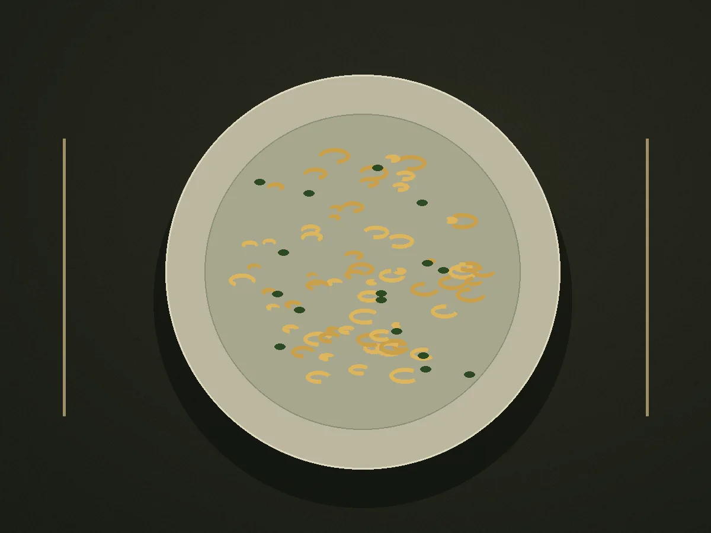

РЕСТОРАН
Место со своим характером
Для встреч, которыехочется повторить.
Современная кухня и тёплая атмосфера — чтобы быть чуть ближе друг к другу.
Загружаем нашу историю…
Познакомимся поближе
Всё начинается со встречи.
Посмотрите сезонное меню и выберите свой повод заглянуть в Розалию.